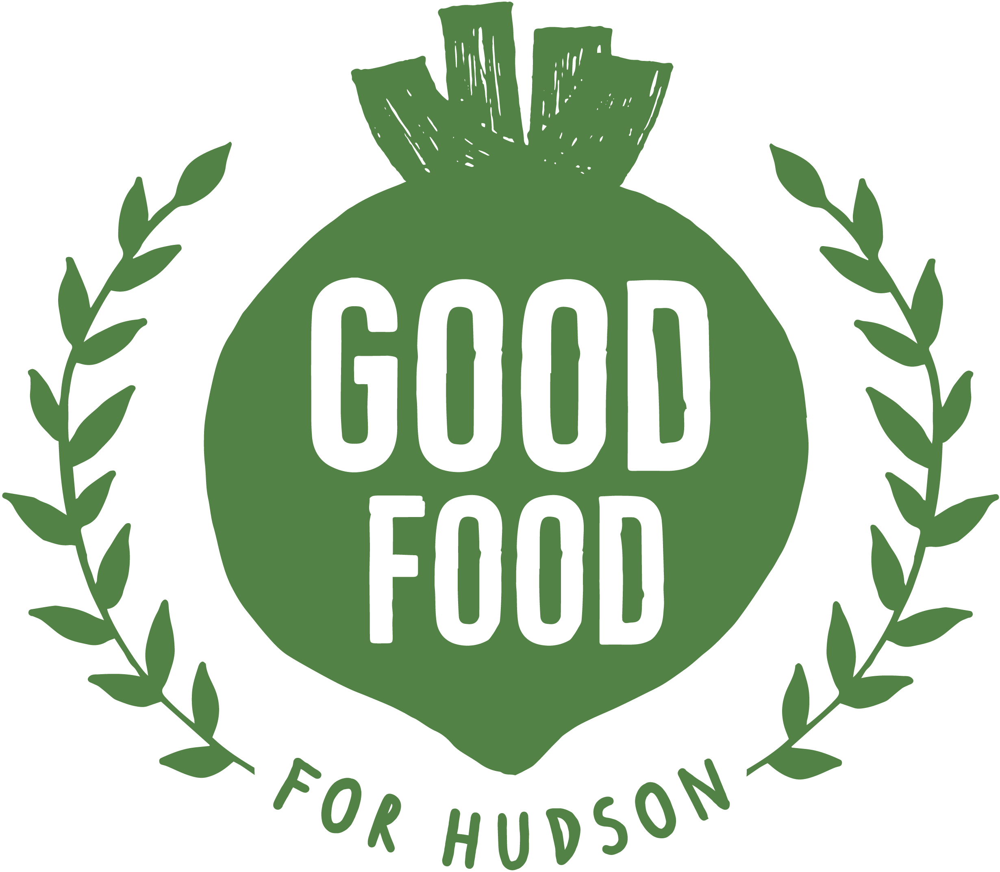
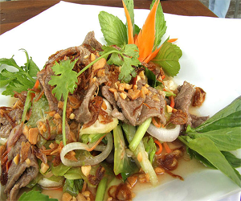
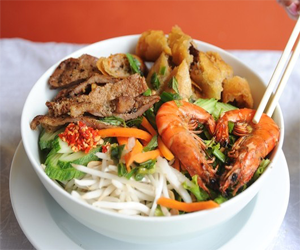
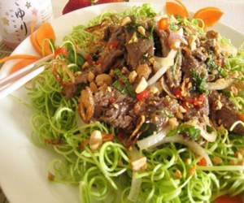
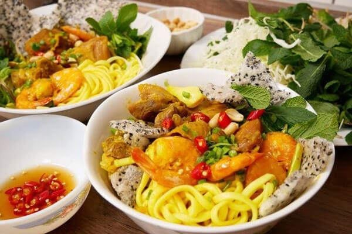
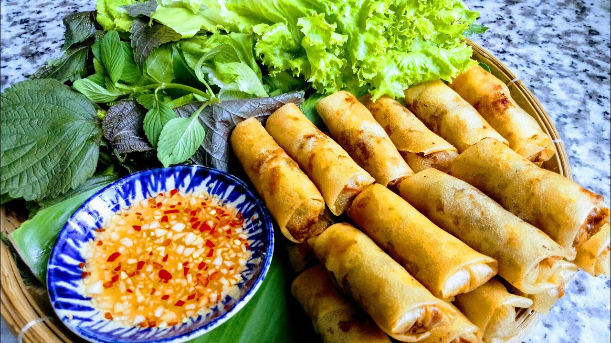

Mi Quang is a traditional Vietnamese noodle dish that originated in the Quang Nam province. It typically consists of wide rice noodles, a flavorful broth, and various toppings such as shrimp, pork, and fresh herbs. The dish is known for its vibrant colors and rich flavors, making it a popular choice among locals and tourists alike.
Spring rolls are a popular Vietnamese appetizer that consists of a thin rice paper wrapper filled with a variety of ingredients such as shrimp, pork, vegetables, and herbs. They are typically served fresh and can be enjoyed with a dipping sauce. Spring rolls are known for their light and refreshing taste.
